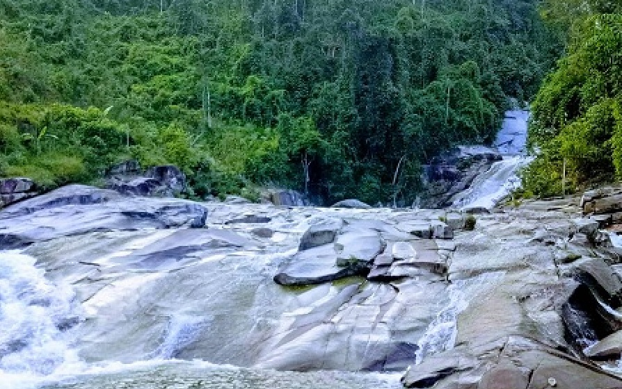

Thác Bảy Tầng
Nghệ An, tỉnh có diện tích lớn nhất Việt Nam, thường chỉ được nhắc đến qua địa danh Cửa Lò nổi tiếng bởi từ lâu, phía Đông Nghệ An đã được khai thác và phát triển thành trung tâm kinh tế – chính trị – văn hóa của tỉnh nhờ lợi thế nằm sát biển và có quốc lộ 1. Còn ngược lại, phía Tây tỉnh là sự khác biệt hoàn toàn, với sự hoang vu, nguyên sơ như từ thuở hồng hoang. Chỉ đến khi đường Hồ Chí Minh được xây dựng, khu vực này mới được lôi ra khỏi đại ngàn, bắt nhịp với cuộc sống hiện đại. Và nhờ đó, một địa danh kỳ thú đang dần được mọi người biết đến, đó là thác 7 tầng ở huyện miền núi Quế Phong.
